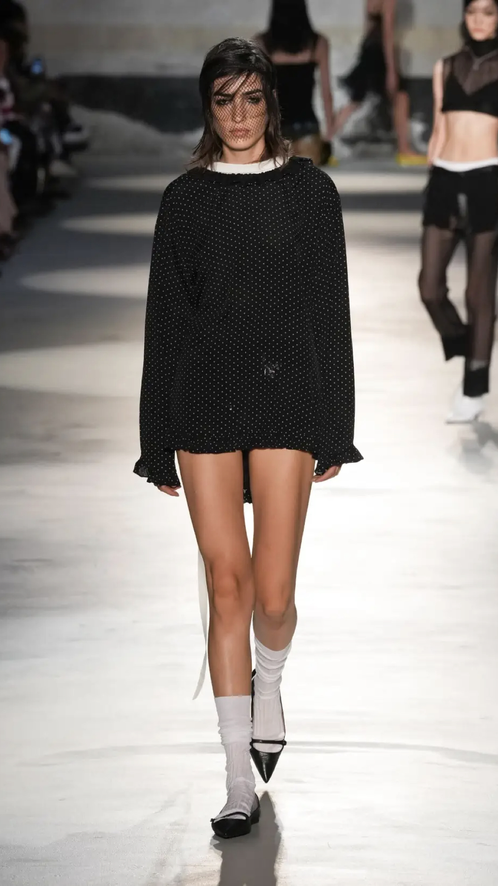

НОСКИ И ГОЛЬФЫ
Ещё один тренд из разряда «не что, а как». Носочки носим с туфлями, босоножками, балетками, ботинками. С любой обувью и одеждой. Можно прозрачные, можно в тон образу, можно акцентные. Выбираем те, которые нравятся вам, и модничаем.
